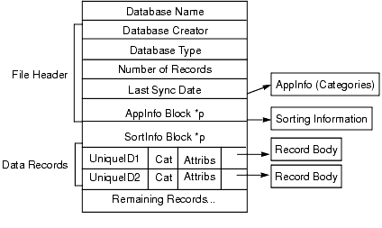

|
|
|
C/C++ Sync Suite Reference for Macintosh Palm OS® Conduit Development Kit for Macintosh, Version 4.03 HotSync Manager and Sync Manager API Versions Classes and Structures in the Sync Manager The Sync Manager and Performance Handheld Record Database Layout Reading Handheld Database Records and Resources Writing Handheld Database Records and Resources Deleting Records in Handheld Databases Maintaining a Connection With the Handheld Database Flag (eDbFlags) Constants Database Information Retrieval Constants Database Open Mode (eDbOpenModes) Constants Miscellaneous Database Flag (eMiscDbListFlags) Constants Option Flag Constants for SyncCloseDBEx Record Attributes (eSyncRecAttrs) Constants The SyncProdCompInfoType Structure |
Use the Sync Manager with your conduit to exchange data with Palm Powered™ handhelds that are connected to the desktop computer. Handhelds can be connected to the desktop computer with a cradle and a serial cable, or modem connection. The Sync Manager handles the actual handheld communications and provides functions to receive data from and send data to databases on the handheld. Sync Manager VersionsThe Sync Manager continues to evolve with new functions and new versions of older functions. Each version of the Sync Manager API has a major version number and a minor version number. You can determine the version of the Sync Manager API that you are using by calling the SyncGetAPIVersion function. The Sync Manager maintains backward compatibility within a major version. The Sync Manager minor version number changes when new functions are added or bug repairs are completed. This document includes version information for each function. NOTE: Conduits developed with the Conduit Development Kit can be used on desktop computers that are running version 2.0 or later of the Sync Manager API. Your conduits will not operate on desktop computers that have earlier versions of the Sync Manager API. If your conduit depends on functions that are available only in certain versions of the Sync Manager API, you need to determine the version of the Sync Manager API with which you are dealing on a specific installation. To do so, call the SyncGetAPIVersion function, which returns both the major version number and minor version number of the Sync Manager API on the desktop computer. For example, if your conduit depends on a function that was added in version 2.1 of the Sync Manager API, you need to call the SyncGetAPIVersion function and then verify that the major number is 2 or greater and that the minor version number is 1 or greater. HotSync Manager and Sync Manager API VersionsYou need to know that the version of the HotSync® Manager application running on a specific desktop computer is not necessarily the same as the version of the Sync Manager API installed on that system. The calls that your conduit can make are dependent on the Sync Manager API version installed on the desktop computer.
The table below shows the mapping from HotSync Manager versions to Sync Manager API versions.
Using the Sync ManagerThe HotSync Manager application calls each conduit that is installed on the user's desktop computer in sequence. The HotSync Manager application calls an entry point, such as the OpenConduit function, in your conduit, which allows your conduit to begin its operations. You then call Sync Manager functions to exchange data with handheld. To use the Sync Manager, your conduit must first call the Sync Manager SyncRegisterConduit function to initiate the synchronization process. You can then call the Sync Manager functions to exchange data with the handheld. When you finish your synchronization process, call the SyncUnRegisterConduit function to release the Sync Manager to other processes. NOTE: The Sync Manager is not guaranteed to be thread-safe, which means that you must make all of your Sync Manager calls from the same thread that launched your conduit. Sync Manager Error CheckingSince the connection to the handheld can be interrupted at any time, you must be sure to check for errors after calling any Sync Manager function. WARNING! If your call to a Sync Manager function returns an error, the other values returned by that function are considered undefined. Using these values can cause data corruption. If you fail to check the error code and then use data values returned by a function that returned an error, you can easily corrupt your database. Classes and Structures in the Sync ManagerThe Sync Manager API includes a number of classes that are described in this chapter. All of these classes consist of data members only and can be used in the same manner as you use standard C data structures. The Sync Manager and PerformanceYou need to keep in mind that many of the calls you make to the Sync Manager functions require the transfer of data between your desktop computer and the handheld. These calls are input/output bound and may require significant amounts of time to complete. For best performance of your conduit, you need to structure your logic to minimize the number of Sync Manager function calls. Specifically, you should design your code with the following performance-enhancing tips in mind: • Avoid reading a record or information block more than once from the handheld database. You can cache information on the desktop computer to preclude the need to access the same information more than once. • When you are reading information from a database, allocate a buffer that is large enough to store the largest possible record size in that database. This is significantly faster than making one call to determine the data size and another call to actually read the data. The following Sync Manager functions are not I/O bound and can thus be called without significantly impacting the performance of your conduits: Handheld Database TypesYou can create or use two different kinds of databases on handhelds: • record databases store application data in records • resource databases store resources; for example, an application that runs on the handheld is a resource database consisting of code, user interface, and other resources. Both database types use a similar layout format, and both provide interface functions for accessing and modifying database entries. Handheld Record Database LayoutEach handheld database is stored in memory as a file header followed by a sequence of records or resources. Record and resource databases are used differently and have different attributes. However, they do have similar structures, in that each manages multiple blocks of arbitrary data, and each has a header block. The file header section of each database contains the following information about the database: • its name • its creator • its type • the number of records • the last synchronization date • an optional, variable-length application information block • an optional, variable-length sorting information block Each record in a record database consists of the following information: • the record ID • the record category index • record attributes • record data Each resource in a resource database consists of the following information: • the resource type • the resource ID • record data Figure 2.1 shows the layout of a handheld record database. For more detailed information about database layout and the data structures used by the built-in applications, see the Palm OS SDK documentation. Figure 2.1 Handheld record database layout

The File Header Information BlocksThe database file header contains two variable length blocks that you can use to exchange information with the database: • the application information block, referred to as AppInfo in Figure 2.1, is a block of arbitrary information that an application can store in its database. Several of the built-in applications use this block to store the category strings associated with the database. You can use the SyncReadDBAppInfoBlock and SyncWriteDBAppInfoBlock functions to access this block in a database on the handheld. • the sorting information block, referred to as SortInfo in Figure 2.1, is used by applications to store information about how records in the database are sorted. The built-in applications do not currently store any information in this block. You can use the SyncReadDBSortInfoBlock and SyncWriteDBSortInfoBlock functions to access this block in a database on the handheld. Database Record AttributesEach database record on the handheld contains a byte of attribute flag bits, as described in the Record Attributes (eSyncRecAttrs) Constants section. You can use these bits to determine record conditions including whether the record has been marked as modified, marked for archiving, marked for deletion, or marked as private. Reading Handheld Database Records and ResourcesThe Sync Manager provides a number of functions for retrieving records and resources from a database on the handheld. Each of these functions reads the record or resource into an object of The CRawRecordInfo Class. You must fill in certain raw record object fields before calling each function. The function retrieves the record from the handheld and fills in other fields with the record information. The fields required for each function are described in the documentation for each function. You can use the following Sync Manager functions to read records or resources from a database on the handheld: • the SyncReadRecordById retrieves a record that you specify by record ID. • the SyncReadRecordByIndex retrieves a record that you specify by record index. • the SyncReadResRecordByIndex retrieves a resource that you specify by index from a resource database. Iterating Through a DatabaseThe Sync Manager also provides functions that you can use to iterate through a database on the handheld. To iterate through records in a database, you first reset the current index into the database by calling the SyncResetRecordIndex function, and then repeatedly call one of the following retrieval functions: • the SyncReadNextRecInCategory retrieves the next record in a certain record category. • the SyncReadNextModifiedRec retrieves the next record that has been modified (since the last synchronization date). • the SyncReadNextModifiedRecInCategory retrieves the next record in a specific record category that has been modified. The Sync Manager automatically resets the current database iteration index for a database upon opening the database. To reset the index for subsequent iterations, you must call the SyncResetRecordIndex function. Modifying a Database While IteratingThe Sync Manager does not support the interleaving of iterating through and modifying a database at the same time, which means that you need to structure your logic to not modify a database while iterating through it. Beginning with version 2.0 of the Palm OS, you can safely delete records from a database while iterating through it, with the exception of the SyncPurgeAllRecsInCategory function. Writing Handheld Database Records and ResourcesThe Sync Manager provides several functions for writing records and resources to a database on the handheld. Each of these functions sends record information that you have stored in an object of The CRawRecordInfo Class. You can use these functions to modify an existing record or to add a new record to a database. To write a record to a handheld database, fill in certain fields in the raw record object and then call one of the Sync Manager record-writing functions. The function sends the record to a database on the handheld. You can use the SyncWriteRec function to write a record to a handheld record database, and you can use the SyncWriteResourceRec to write a resource to a resource database on the handheld. Deleting Records in Handheld DatabasesWhen you use a Sync Manager function to delete a record or resource from a database, the record or resource is immediately deleted and removed from the database. This is in contrast to some calls that applications on the handheld make to delete records, which mark those records for deletion but do not remove them immediately. Developers have been confused in the past because some of the deletion function names begin with the Delete prefix and others with the Purge prefix. All of these functions delete objects. The Sync Manager provides several functions for deleting records or resources from databases. To use these functions, you assign data to specific fields in an object of The CRawRecordInfo Class. You then call one of the following functions: • the SyncDeleteRec function deletes a record from a record database. • the SyncDeleteResourceRec function deletes a specific resource from a resource database. Deleting Multiple Records From a Handheld DatabaseYou can delete multiple records by calling one of the following Sync Manager functions: • the SyncPurgeAllRecs function deletes and removes all records in a record database on the handheld. • the SyncPurgeAllRecsInCategory function deletes and removes all of the records in a specific category from a record database on the handheld. • the SyncPurgeDeletedRecs function deletes and removes all of the records in a record database that have previously been marked as deleted or archived. • the SyncDeleteAllResourceRec function deletes and removes all resources from a resource database. Maintaining a Connection With the HandheldIf your conduit is performing any time-consuming operations between calls that exchange data with the handheld, you need to ping the handheld to keep the connection alive. For example, you might be retrieving data from a network database that takes considerable time to access. To ping the handheld, you call the SyncYieldCycles function: SyncYieldCycles(WORD wMaxMilliSecs) The wMaxMilliSecs parameter specifies the maximum number of milliseconds to spend servicing events. You should set this value to 1 millisecond, as any larger value is most likely a waste of time. You need to call the SyncYieldCycles function as often as possible. Calls to this function do not appreciably affect the performance of your conduit. There are several reasons why your conduit needs to call SyncYieldCycles frequently: • to ensure that the HotSync Manager application progress dialog box remains active; otherwise, the user could press the Cancel button without effect. • to maintain the HotSync Manager application progress dialog arrow animation, which provides visual feedback to the user that the system is active. • to keep the connection with the handheld alive when your conduit is performing time-consuming activities; for example, if your conduit is accessing data from a server or retrieving data from a very large database. In these cases, you might not communicate with the handheld for a long enough period of time and cause it to terminate the connection. Versions of the HotSync Manager application earlier than version 2.1 are single-threaded, which makes calling this function vital to maintain the connection. Version 2.1 of the HotSync application added a second thread that maintains the connection during synchronization operations; however, you must still call the SyncYieldCycles function to process user-interface events and update the HotSync display. You must call the SyncYieldCycles function, and all other Sync Manager functions, from the same thread that launched your conduit. Sync Manager ConstantsThis section describes the constants that you use with the Sync Manager functions. General ConstantsThese are the general-purpose constants for use with the Sync Manager API.
Database Flag (eDbFlags) ConstantsYou can combine the database flag constants together to specify information about a database. Each flag indicates a property or condition of the database.
enum eDbFlags {
eRecord = 0x0000,
eResource = 0x0001,
eReadOnly = 0x0002,
eAppInfoDirty = 0x0004,
eBackupDB = 0x0008,
eOkToInstallNewer = 0x0010,
eResetAfterInstall = 0x0020,
eCopyPrevention = 0x0040,
eStream = 0x0080,
eHidden = 0x0100,
eLaunchableData = 0x0200,
eRecyclable = 0x0400,
eBundle = 0x0800,
eOpenDB = 0x8000
};
Note that the eRecord and eResource flags are mutually exclusive and that you must specify exactly one of them when creating a database.
Database Information Retrieval ConstantsYou can combine the database information retrieval constants together to specify how Sync Manager operations retrieve data about the database.
Database Open Mode (eDbOpenModes) ConstantsYou can combine the database open mode constants together to specify in what mode to open a database.
enum eDbOpenModes { eDbShowSecret = 0x0010,
eDbExclusive = 0x0020,
eDbWrite = 0x0040,
eDbRead = 0x0080
};
The following rules explain how to use the database open mode constants: • You generally include the eDbShowSecret flag; otherwise, some of the Sync Manager functions will not return records that are marked as private. • If you are opening a database for reading only, specify • If you are opening a database for reading and writing, specify (eDbRead | eDbWrite | eDbShowSecret) • You can use the eDbExclusive flag to open the database in exclusive mode, which means that nothing else on the handheld can use the database until you close it. This also means that your open call will fail if anything else on the handheld is using the database. Note that eDbExclusive is of limited value, since applications are not allowed to run on the handheld during synchronization operations.
Miscellaneous Database Flag (eMiscDbListFlags) ConstantsThe miscellaneous database list flag constants are returned in the m_miscFlags of an object of the The CDbList Class structure when you call certain of the Sync Manager functions; for example, the SyncReadDBList function.
enum eMiscDbListFlags {
eMiscDbFlagExcludeFromSync = 0x0080,
eMiscDbFlagRamBased = 0x0040
}
#define eExcludeFromSync
eMiscDbFlagExcludeFromSync
Option Flag Constants for SyncCloseDBExYou can combine the database close constants together to specify actions to take when closing a database.
Record Attributes (eSyncRecAttrs) ConstantsThe record attribute constants are combined together in the m_Attribs field of The CRawRecordInfo Class.
enum eSyncRecAttrs {eRecAttrDeleted = 0x80,
eRecAttrDirty = 0x40,
eRecAttrBusy = 0x20
eRecAttrSecret = 0x10,
eRecAttrArchived = 0x08
};
Search Option ConstantsYou can use these constants as values in the srchflags field of the SyncFindDbByTypeCreatorParams structure.
Sync Manager ClassesThis section describes the classes that you use with the Sync Manager functions. Sync Manager functions use objects of these classes as parameter values. The CCallModuleParams ClassThe SyncCallRemoteModule function uses an object of the CCallModuleParams class to specify information that is sent to a module on the handheld. class CCallModuleParams { public: // Values passed in by the caller: DWORD m_dwCreatorID; DWORD m_dwTypeID; WORD m_wActionCode; DWORD m_dwParamSize; void* m_pParam; DWORD m_dwResultBufSize; void* m_pResultBuf; // Values returned to the caller: DWORD m_dwResultCode; DWORD m_dwActResultSize; DWORD m_dwReserved; }; CCallModuleParams Class Members
The CCardInfo ClassObjects of the CCardInfo class specify information about a memory card on the handheld. class CCardInfo { public: BYTE m_CardNo; WORD m_CardVersion; long m_CreateDate; DWORD m_RomSize; DWORD m_RamSize; DWORD m_FreeRam; BYTE m_CardNameLen; BYTE m_ManufNameLen; char m_CardName[SYNC_REMOTE_CARDNAME_BUF_SIZE]; char m_ManufName[SYNC_REMOTE_MANUFNAME_BUF_SIZE]; WORD m_romDbCount; WORD m_ramDbCount; DWORD m_dwReserved; }; CCardInfo Class Members
The CDbCreateDB ClassYou use objects of the CDbCreateDB class to specify information about a database that you are creating with the SyncCreateDB function. class CDbCreateDB { public: BYTE m_FileHandle; DWORD m_Creator; eDbFlags m_Flags; BYTE m_CardNo; char m_Name[SYNC_DB_NAMELEN]; DWORD m_Type; WORD m_Version; DWORD m_dwReserved; }; CDbCreateDB Class Members
The CDbGenInfo ClassYou use objects of the CDbGenInfo class to specify information about the application information or sorting information blocks in the database file header. You use objects of this class with the SyncReadDBAppInfoBlock, SyncReadDBSortInfoBlock, SyncWriteDBAppInfoBlock, and SyncWriteDBSortInfoBlock functions. class CDbGenInfo { public: char m_FileName[SYNC_DB_NAMELEN]; WORD m_TotalBytes; WORD m_BytesRead; BYTE* m_pBytes; DWORD m_dwReserved; }; CDbGenInfo Class Members
The CDbList ClassEach object of the CDbList class contains information about a database on the handheld. Objects of this class are used with data structures and functions, including the SyncReadDBList function. class CDbList { public: int m_CardNum; WORD m_DbFlags DWORD m_DbType; char m_Name[SYNC_DB_NAMELEN]; DWORD m_Creator; WORD m_Version; DWORD m_ModNumber; WORD m_Index; long m_CreateDate; long m_ModDate; long m_BackupDate; __int32 m_miscFlags; long m_RecCount; long m_dwReserved; }; CDBList Class Members
The CPositionInfo ClassYou use objects of the CPositionInfo class to specify parameter information for the SyncReadPositionXMap function. class CPositionInfo { public: BYTE m_FileHandle; WORD m_FirstPos; WORD m_MaxEntries; WORD m_NumReadIn; WORD m_TotalBytes; BYTE * m_pBytes; }; CPositionInfo Class Members
The CRawPreferenceInfo ClassUse objects of the CRawPreferenceInfo class to read or write an application preference. Objects of this class are used with the SyncReadAppPreference and SyncWriteAppPreference functions. class CRawPreferenceInfo { public: WORD m_version; DWORD m_creator; WORD m_prefId; WORD m_reqBytes; WORD m_retBytes; WORD m_actSize; BOOL m_backedUp; long m_nBytes; BYTE* m_pBytes; DWORD m_dwReserved; }; CRawPreferenceInfo Class Members
The CRawRecordInfo ClassYou use objects of the CRawRecordInfo class with many of the Sync Manager functions to exchange database records and resources with the handheld. Each of the functions require that you fill in certain of the object fields with information before calling the function; which fields must be filled in are indicated in the documentation for each function. class CRawRecordInfo { public: BYTE m_FileHandle; DWORD m_RecId; WORD m_RecIndex; BYTE m_Attribs; short m_CatId; int m_ConduitId; DWORD m_RecSize; WORD m_TotalBytes; BYTE* m_pBytes; DWORD m_dwReserved; }; CRawRecordInfo Class Members
The CSystemInfo ClassYou can use objects of the CSystemInfo class to retrieve information about the handheld. This class is used with the SyncReadSystemInfo function. class CSystemInfo { public: DWORD m_RomSoftVersion; DWORD m_LocalId; BYTE m_ProdIdLength; BYTE m_AllocedLen; BYTE* m_ProductIdText; DWORD m_dwReserved; }; CSystemInfo Class Members
The CUserIDInfo ClassYou can use objects of the CUserIDInfo class to retrieve information about the user on the handheld. You use this class with the SyncReadUserID function. class CUserIDInfo { public: char m_pName[SYNC_REMOTE_USERNAME_BUF_SIZE]; int m_NameLength; char m_Password [SYNC_REMOTE_PASSWORD_BUF_SIZE]; int m_PasswdLength; long m_LastSyncDate; DWORD m_LastSyncPC; DWORD m_Id; DWORD m_ViewerId; DWORD m_dwReserved; }; CUserIDInfo Class Members
Sync Manager Data StructuresThis section describes the data structures that you use with the Sync Manager functions. SyncDatabaseInfoTypeUsageThe SyncDatabaseInfoType structure is passed to several of the Sync Manager functions, which fill in the fields of the structure with information about a database. The SyncFindDbByName, SyncFindDbByTypeCreator, and SyncReadOpenDbInfo functions use this structure type. Declaration
typedef struct SyncDatabaseInfoType {
CDbList baseInfo;
DWORD dwNumRecords;
DWORD dwTotalBytes;
DWORD dwDataBytes;
DWORD dwAppBlkSize;
DWORD dwSortBlkSize;
DWORD dwMaxRecSize;
DWORD dwLocalId;
DWORD dwOpenRef;
DWORD dwReserved;
} SyncDatabaseInfoType;
Fields
The SyncProdCompInfoType StructureUsageThe SyncProdCompInfoType structure is used to retrieve product compatibility information from the handheld. A pointer to a structure of this type is passed as a parameter to the SyncReadProdCompInfo function. Declaration
typedef struct SyncProdCompInfoType {
SyncVersionType dlpVer;
SyncVersionType compVer;
DWORD dwReserved1;
DWORD dwReserved2;
} SyncProdCompInfoType;
Fields
SyncFindDbByNameParamsUsageThe SyncFindDbByNameParams structure is used to specify information used for finding a database with the SyncFindDbByName function. Declaration
typedef struct SyncFindDbByNameParams {
BYTE bOptFlags;
DWORD dwCardNum;
char* pcDatabaseName;
} SyncFindDbByNameParams;
Fields
SyncFindDbByTypeCreatorParamsUsageThe SyncFindDbByTypeCreatorParams structure is used to specify information used for finding a database with the SyncFindDbByTypeCreator function. Declaration
typedef struct SyncFindDbByTypeCreatorParams {
BYTE bOptFlags;
BYTE bSrchFlags;
DWORD dwType;
DWORD dwCreator;
} SyncFindDbByTypeCreatorParams;
Fields
SyncReadOpenDbInfoParamsUsageThe SyncReadOpenDbInfoParams structure is used to specify information for retrieving handheld database information with the SyncReadOpenDbInfo function. Declaration
typedef struct SyncReadOpenDbInfoParams {
BYTE bOptFlags;
BYTE bDbHandle;
} SyncReadOpenDbInfoParams;
Fields
The SyncVersionType StructureUsageThe SyncVersionType structure is used to specify a version number. Declaration
typedef struct SyncVersionType {
WORD wMajor;
WORD wMinor;
} SyncVersionType;
Fields
Sync Manager Function SummaryYou can use the following Sync Manager functions in your conduits: • SyncReadNextModifiedRecInCategory NOTE: You cannot use the Conduit Development Kit to develop conduits for Hot Sync Manager versions 1.0 or 1.2. For information about versions of the HotSync Manager application and Sync Manager API versions, see HotSync Manager and Sync Manager API Versions. SyncAddLogEntryPurposeAdds an entry to the log on the handheld. Compatibility
Prototypelong SyncAddLogEntry(const char* pText); Parameters
ResultIf unsuccessful, returns one of the following non-zero error code values:
For more information about the error codes, see Sync Manager Error Code Summary. CommentsYou can use this function to add an entry to the message log on the handheld. Since the log has limited space, keep your entries as short as possible. To include a new line in your log entry, use a single line-feed character (character code 0x0A). Note that the HotSync Manager application automatically logs the general success or failure status of your conduit; thus, you need not add an entry for this purpose. SyncCallRemoteModulePurposeCalls a module (an application, panel, or other executable) on the handheld and returns data and status information to your conduit from that module. Note that almost all conduits can accomplish their tasks without needing to use this function, which is provided as a "back door" function. Compatibility
Prototypelong SyncCallRemoteModule(CCallModuleParams* pParams); Parameters
ResultIf unsuccessful, returns one of the following non-zero error code values:
The SYNCERR_UNKNOWN_REQUEST error is returned if the handheld module was not found, or if the handheld module did not handle the action code. The SYNC_LOCAL_BUFF_TOO_SMALL error is returned if your results buffer was not large enough to contain the results data. If this is the case, then upon return the value of m_dwActResultSize will be greater than the value of m_dwResultBufSize, and only m_dwResultBufSize bytes were copied to the results buffer. For more information about the error codes, see Sync Manager Error Code Summary. CommentsYou can use the SyncCallRemoteModule function to call an application on the handheld while your conduit is running. You can use the parameter block to send arbitrary data to the application. The application can store variable-sized information into the parameter block, which you can examine when the call completes. Note that the format of the data and the action codes are completely module-specific. The handheld module that you call must have the same structure as a Palm OS application; however, the module can have a proprietary type ID so that it does not show up in the launcher. Palm discourages you from using this function unless you absolutely have to: almost all conduits can accomplish their jobs without using the SyncCallRemoteModule function. SyncChangeCategoryPurposeChanges the category index of all records in a specified category in an open database on the handheld. This function does not alter the modified status of the records. Compatibility
Prototypelong SyncChangeCategory(BYTE fHandle, BYTE fromIndex, BYTE toIndex); Parameters
ResultIf unsuccessful, returns one of the following non-zero error code values:
For more information about the error codes, see Sync Manager Error Code Summary. CommentsYou can use the SyncChangeCategory function to change the category of records in a database on the handheld. All records that are in the category specified by the fromIndex parameter value are changed to be in the category specified by the toIndex parameter value. Both category index values must be in the range 0 to 15. By convention, index 0 is for the unfiled category, and index values 1 through 15 are filed category index values. SyncCloseDBPurposeCloses a record or resource database that was opened by SyncOpenDB or SyncCreateDB. Compatibility
Prototypelong SyncCloseDB(BYTE fHandle) Parameters
ResultIf successful, returns 0, which means that the database was closed and its handle was destroyed. If unsuccessful, returns one of the following non-zero error code values:
For more information about the error codes, see Sync Manager Error Code Summary. CommentsYou can use the SyncCloseDB function to close a database on the handheld that was previously opened by a call to SyncOpenDB or SyncCreateDB. The Sync Manager allows only one database to be open at any time; thus, you must close any opened database before calling this function. If you open a database, you must close it before exiting your conduit; otherwise, other conduits will not be able to open their databases. See AlsoThe SyncCreateDB and SyncOpenDB functions. SyncCloseDBExPurposeCloses a database, optionally updating its backup and/or modification date. This is the extended version of the SyncCloseDB function. Compatibility
Sync Manager version: 2.2 or later. *This function is compatible with Palm OS version 3.0 if the value of the bOptFlags parameter is nonzero. Prototypelong SyncCloseDBEx (BYTE dbHandle, BYTE bOptFlags); Parameters
ResultIf successful, returns 0, which means that the database was closed and its handle was destroyed. If unsuccessful, returns one of the following nonzero error code values: SYNCERR_COMM_NOT_INIT SYNCERR_LOST_CONNECTION SYNCERR_REMOTE_SYS SYNCERR_REMOTE_MEM SYNCERR_REMOTE_BAD_ARG SYNCERR_NO_FILES_OPEN For more information about the error codes, see "Sync Manager Error Code Summary." CommentsYou can use the SyncCloseDBEx function to close a database on the handheld that was previously opened by a call to SyncOpenDB or SyncCreateDB. This function optionally updates the database modification and/or backup dates. If the handheld is using a version of the Palm OS software earlier than version 3.0, you must specify a value of 0 for the bOptFlags argument; otherwise, this function fails. For version 3.0, you can use the following flag values: • Set the SYNC_CLOSE_DB_OPT_UPDATE_BACKUP_DATE flag to update the backup date of the database to the current date and time on the handheld, without changing the modification date. • Set the SYNC_CLOSE_DB_OPT_UPDATE_MOD_DATE flag to update the modification date of the database to the current date and time on the handheld. The Sync Manager allows only one database to be open at any time; therefore you must use this function or SyncCloseDB before opening another database or exiting your conduit. Otherwise, other conduits will not be able to open their databases. SyncCreateDBPurposeCreates a new record or resource database on the handheld, and opens that database. The database is opened for exclusive read-write access, with private (secret) records shown. Compatibility
Prototypelong SyncCreateDB (CDbCreateDB& rDbStats) Parameters
ResultIf successful, returns 0, which means that the database was created and its handle stored into the m_FileHandle data member of rDbStats. If unsuccessful, returns one of the following non-zero error code values:
For more information about the error codes, see Sync Manager Error Code Summary. CommentsYou can use the SyncCreateDB function to create a new database on the handheld. You specify information about the database in the rDbStats object that you pass in. Upon return, the m_fileHandle field contains the file handle for the newly created database. Note that SyncCreateDB will not overwrite an existing database. If you attempt to create a database with the name of an existing database, SyncCreateDB fails with the SYNCERR_FILE_ALREADY_EXIST error. If you want to replace an existing database, you need to explicitly delete the old database with SyncDeleteDB and then call SyncCreateDB to create the new database. The Sync Manager allows only one database to be open at any time; thus, you must close any opened database before calling this function. If you open a database, you must close it before exiting your conduit; otherwise, other conduits will not be able to open their databases. SyncDeleteAllResourceRecPurposeDeletes all resources from an open resource database on the handheld. The database must be opened for reading and writing. Compatibility
Prototypelong SyncDeleteAllResourceRec (BYTE fHandle) Parameters
ResultIf unsuccessful, returns one of the following non-zero error code values:
For more information about the error codes, see Sync Manager Error Code Summary. CommentsYou can use the SyncDeleteAllResourceRec function to delete all of the resources in a resource database on the handheld. SyncDeleteDBPurposeDeletes a database on the handheld. Compatibility
Prototypelong SyncDeleteDB(char* pName, int nCardNum) Parameters
ResultIf successful, returns 0, which means that the database was deleted. If unsuccessful, returns one of the following non-zero error code values:
For more information about the error codes, see Sync Manager Error Code Summary. CommentsYou can use the SyncDeleteDB function to delete a named database from the handheld. Note that you cannot delete an open database; you must close the database first. SyncDeleteRecPurposeDeletes the specified record from an open record database on the handheld. Compatibility
Prototypelong SyncDeleteRec (CRawRecordInfo &rInfo) Parameters
ResultIf successful, returns 0, which means that the record was deleted. If unsuccessful, returns one of the following non-zero error code values:
For more information about the error codes, see Sync Manager Error Code Summary. CommentsYou can use the SyncDeleteRec function to delete a record from a database on the handheld. You specify the record that you want deleted by creating an object of The CRawRecordInfo Class and filling in the object's m_FileHandle and m_RecId fields. The record data and its entry in the database's record list are completely deleted. Note that the HotSync iteration index is not updated when you delete a record on a handheld that is running a version of the Palm OS earlier than version 2.0. You need to be aware of possible difficulties with modifying a database while iterating through it. For more information, see Modifying a Database While Iterating. SyncDeleteResourceRecPurposeDeletes a resource from an open resource database on the handheld. The database must be opened for reading and writing. Compatibility
Prototypelong SyncDeleteResourceRecord(CRawRecordInfo rRec) Parameters
ResultIf successful, returns 0, which means that the resource was deleted. If unsuccessful, returns one of the following non-zero error code values:
For more information about the error codes, see Sync Manager Error Code Summary. CommentsYou can use the SyncDeleteResourceRec function to delete a resource record from a resource database on the handheld. You specify the record that you want deleted by filling in m_FileHandle, m_RecId, and m_RecIndex fields of an object of The CRawRecordInfo Class. SyncFindDbByNamePurposeSearches for a database by name and memory card number on the handheld, and returns information about the database if it is found. Compatibility
Sync Manager version: 2.2 or later. Prototypelong SyncFindDbByName (SyncFindDbByNameParams& rParam, SyncDatabaseInfoType& rInfo); Parameters
ResultIf unsuccessful, returns one of the following nonzero error code values: SYNCERR_COMM_NOT_INIT SYNCERR_LOST_CONNECTION SYNCERR_REMOTE_SYS SYNCERR_REMOTE_MEM SYNCERR_REMOTE_BAD_ARG SYNCERR_NOT_FOUND For more information about the error codes, see "Sync Manager Error Code Summary." CommentsYou can use the SyncFindDbByName function to retrieve information about a database when you know the name of the database. You fill in the structure pointed to by rParam with the database name and retrieval options, and SyncFindDbByName returns a structure with information filled in. SyncFindDbByTypeCreatorPurposeSearches for a database by type and creator on the handheld, and returns information about the database if it is found. Compatibility
Sync Manager version: 2.2 or later. Prototypelong SyncFindDbByTypeCreator (SyncFindDbByTypeCreatorParams& rParam, SyncDatabaseInfoType& rInfo); Parameters
ResultIf unsuccessful, returns one of the following nonzero error code values: SYNCERR_COMM_NOT_INIT SYNCERR_LOST_CONNECTION SYNCERR_REMOTE_SYS SYNCERR_REMOTE_MEM SYNCERR_REMOTE_BAD_ARG SYNCERR_NOT_FOUND The SYNCERR_NOT_FOUND error is returned when there are no more databases on the handheld that meet the search criteria. For more information about the error codes, see "Sync Manager Error Code Summary." CommentsYou can use the SyncFindDbByTypeCreator function to retrieve information about a database when you know the type and creator ID of the database. You fill in the structure pointed to by rParam with the database type and creator ID values, and specify the retrieval options, and SyncFindDbByName returns a structure with information filled in. You use this function to enumerate through multiple databases of a particular type and/or creator. To begin a new search for a specific creator/type pair, you must specify the SYNC_DB_SRCH_OPT_NEW_SEARCH flag in the bSrchFlags field of rParam. Subsequent calls in the same sequence must exclude this flag. Note that SyncFindDbByTypeCreator does not support creation or deletion of databases in the middle of enumerating through them. SyncGetAPIVersionPurposeRetrieves the version of the Sync Manager API that is installed on the desktop computer. Compatibility
Prototypelong SyncGetAPIVersion(DWORD* pdwMajor, DWORD* pdwMinor); Parameters
ResultCommentsYou can use the SyncGetAPIVersion to retrieve the version of the Sync Manager API on the desktop computer. You can use this information to determine which of the Sync Manager functions you can use on the desktop computer. For information about Sync Manager API versions and their relationship to HotSync Manager application versions, see HotSync Manager and Sync Manager API Versions. SyncGetDBRecordCountPurposeRetrieves the total record or resource count for an open database on the handheld. Compatibility
Prototypelong SyncGetDBRecordCount(BYTE fHandle, Word &rNumRecs) Parameters
ResultIf unsuccessful, returns one of the following non-zero error code values:
For more information about the error codes, see Sync Manager Error Code Summary. SyncGetHHOSVersionPurposeRetrieves the version number of the operating system on the handheld. Compatibility
PrototypeWORD SyncGetHHOSVersion(WORD* pwRomVMinor); Parameters
ResultIf successful, returns the major version number of the operating system on the handheld. If the function fails, returns 0, which generally indicates a lost connection. CommentsYou can use the SyncGetHHOSVersion function to retrieve the version of the operating system that is in use on the handheld with which the Sync Manager is communicating. You can use this information to determine which functions are available on the handheld. See AlsoYou can also determine the operating system version numbers by calling the SyncReadSystemInfo function and then using the SYNCROMVMINOR and SYNCROMVMINOR macros on the m_RomSoftVersion field of the CSystemInfo structure. SyncHHToHostDWordPurposeReturns the desktop computer's representation of the specified 32-bit DWORD value from the handheld. Compatibility
PrototypeDWORD SyncHHToHostDWord(DWORD dwValue); Parameters
ResultThe DWORD result of the conversion. This is the representation of the value on the desktop computer. CommentsYou can use the SyncHHToHostDWord to convert a DWORD value from the handheld into the representation used on the desktop computer. This function performs byte swapping as required and returns the converted value as the function result. See AlsoThe SyncHHToHostWord, SyncHostToHHDWord, and SyncHostToHHWord functions. SyncHHToHostWordPurposeReturns the desktop computer's representation of the specified 16-bit WORD value from the handheld. Compatibility
PrototypeWORD SyncHHToHostWord(WORD wValue); Parameters
ResultThe WORD result of the conversion. This is the representation of the value on the desktop computer. CommentsYou can use the SyncHHToHostWord to convert a WORD value from the handheld into the representation used on the desktop computer. This function performs byte swapping as required and returns the converted value as the function result. See AlsoThe SyncHostToHHDWord, and SyncHostToHHWord functions. SyncHostToHHDWordPurposeReturns the handheld's representation of the specified 32-bit DWORD value from the desktop computer. Compatibility
PrototypeDWORD SyncHostToHHDWord(DWORD dwValue); Parameters
ResultThe DWORD result of the conversion. This is the representation of the value on the handheld. CommentsYou can use the SyncHostToHHDWord to convert a DWORD value from the desktop computer into the representation used on the handheld. This function performs byte swapping as required and returns the converted value as the function result. See AlsoThe SyncHostToHHDWord, SyncHHToHostWord, and SyncHostToHHWord functions. SyncHostToHHWordPurposeReturns the handheld's representation of the specified 16-bit WORD value from the desktop computer. Compatibility
PrototypeWORD SyncHostToHHWord(WORD wValue); Parameters
ResultThe WORD result of the conversion. This is the representation of the value on the handheld. CommentsYou can use the SyncHostToHHWord to convert a WORD value from the desktop computer into the representation used on the handheld. This function performs byte swapping as required and returns the converted value as the function result. See AlsoThe SyncHHToHostDWord, SyncHHToHostWord, and SyncHostToHHDWord functions. SyncMaxRemoteRecSizePurposeRetrieves the maximum record or resource size supported on the handheld. Compatibility
Prototypelong SyncMaxRemoteRecSize(DWORD& rdwMaxRecSize); Parameters
ResultIf unsuccessful, returns one of the following non-zero error code values:
For more information about the error codes, see Sync Manager Error Code Summary. CommentsYou can use the SyncMaxRemoteRecSize function to determine the maximum size record that you can allocate on the handheld. Upon return, the value of the rdwMaxRecSize parameter is the maximum record size, in bytes. If this value is 0, the maximum record size is unknown. If this value is 0xFFFFFFFF, you can allocate any record size up to the amount of available memory. Note that the actual size value is subject to available storage. The maximum record size supported on Palm OS version 3.0 is 65505 bytes. The maximum record size supported for earlier versions is 64720 bytes. SyncOpenDBPurposeOpens an existing record or resource database on the handheld. Compatibility
Prototypelong SyncOpenDB(char *pName,int nCardNum, Byte& rHandle, Byte openMode) Parameters
ResultIf successful, returns 0, which means that the database was opened. If unsuccessful, returns one of the following non-zero error code values: For more information about the error codes, see Sync Manager Error Code Summary. CommentsYou can use the SyncOpenDB function to open a database by name on the handheld and return a handle to that database. The Sync Manager allows only one database to be open at any time; thus, you must close any opened database before calling this function. If you open a database, you must close it before exiting your conduit; otherwise, other conduits will not be able to open their databases. You can use the database open flag values to specify how the database is to be opened. For details, see Database Open Mode (eDbOpenModes) Constants. SyncPurgeAllRecsPurposeDeletes all of the records in an open record database on the handheld, regardless of record status. Compatibility
Prototypelong SyncPurgeAllRecs(BYTE fHandle) Parameters
ResultIf successful, returns 0. Also returns 0 if the database has no records. If unsuccessful, returns one of the following non-zero error code values:
For more information about the error codes, see Sync Manager Error Code Summary. SyncPurgeAllRecsInCategoryPurposePurges all of the records in the specified category in a record database on the handheld. Compatibility
Prototypelong SyncPurgeAllRecsInCategory(BYTE fHandle, short category); Parameters
ResultIf successful, returns 0. Also returns 0 if the database has no records. If unsuccessful, returns one of the following non-zero error code values:
For more information about the error codes, see Sync Manager Error Code Summary. CommentsYou can use the SyncPurgeAllRecsInCategory function to delete all records in the specified category from the specified database on the handheld. Note that this function does not update the record iteration index. SyncPurgeDeletedRecsPurposeDeletes all of the records that are marked as deleted or archived from an open record database on the handheld. Compatibility
Prototypelong SyncPurgeDeletedRecs(BYTE fHandle) Parameters
ResultIf successful, returns 0. Also returns 0 if the database has no records. If unsuccessful, returns one of the following non-zero error code values:
For more information about the error codes, see Sync Manager Error Code Summary. SyncReadAppPreferencePurposeRetrieves an application's preferences block from the handheld. Compatibility
Prototypelong SyncReadAppPreference(CRawPreferenceInfo& rInfo); Parameters
ResultIf unsuccessful, returns one of the following non-zero error code values:
The SYNCERR_NOT_FOUND error is returned if the requested preference was not found. For more information about the error codes, see Sync Manager Error Code Summary. CommentsYou can use the SyncReadAppPreference function to retrieve an application's preferences from the handheld. Applications running on version 2.0 or later of the Palm OS can store their non-volatile preferences in one of two preference databases: • Preferences stored in the Saved preference database are backed up during synchronization operations and are automatically restored when required. • Preferences stored in the Unsaved preference database are never backed up or restored by the HotSync Manager application. The structure of the data in the preferences block is application dependent. The Sync Manager does not modify this data in any way when retrieving it. This means that multi-byte integer data is stored using big-endian byte ordering, with the most significant byte stored at the lower address in memory. Your conduit is responsible for performing any necessary byte swapping. You must check the version and size of the preference block to ensure compatibility with the application. To use this function, allocate the m_pBytes buffer in an object of The CRawPreferenceInfo Class and fill in the m_creator, m_prefId, m_backedUp, and m_nBytes fields of the object. The SyncReadAppPreferences function fills in the m_version, m_retBytes, and m_actSize fields of the object. See AlsoThe SyncWriteAppPreference function. SyncReadDBAppInfoBlockPurposeRetrieves the application info block, if one exists, from an open database on the handheld. Compatibility
Prototypelong SyncReadDBAppInfoBlock(BYTE fHandle, CDbGenInfo &rInfo) Parameters
ResultIf successful, returns 0. Note that SyncReadDBAppInfoBlock returns 0 even if the buffer you allocated was too small for the resource, with version-specific details as follows: • if you are using version 2.1 or later of the Sync Manager API, the first m_TotalBytes of block data is copied to your buffer, and the m_BytesRead field of rInfo is set to the actual block size. • if you are using a version of the Sync Manager API earlier than version 2.1, nothing is copied to your buffer, but the m_BytesRead field of rInfo is set to the actual block size. Since the Sync Manager does not generate an error for this condition, you must test for it upon function return with an error code of 0: if m_BytesRead is greater than m_TotalBytes, the buffer was too small. If unsuccessful, returns one of the following non-zero error code values:
The SYNCERR_NOT_FOUND error is returned if the requested block is not available. For more information about the error codes, see Sync Manager Error Code Summary. CommentsYou can use the SyncReadDBAppinfoBlock function to read the application information block from an open database on the handheld. For more information about application information blocks, see The File Header Information Blocks. To use this function, allocate the m_pBytes buffer in an object of The CDbGenInfo Class and fill in the m_TotalBytes fields of the object. The SyncReadDBAppInfo function fills in the remaining fields of the object. For performance optimization information, see The Sync Manager and Performance. See AlsoThe SyncReadDBSortInfoBlock and SyncWriteDBAppInfoBlock functions. SyncReadDBListPurposeRetrieves information about a list of databases on the handheld. Compatibility
Prototypelong SyncReadDBList(BYTE cardNo, WORD startIx, BOOL bRam, CDbList* pList, int& rCnt) Parameters
ResultIf unsuccessful, returns one of the following non-zero error code values:
The SYNCERR_NOT_FOUND error is returned if there are no more databases to list. For more information about the error codes, see Sync Manager Error Code Summary. CommentsYou can use the SyncReadDBList function to retrieve information about the databases on the handheld. The retrieved information is stored into an array of objects of The CDbList Class that you preallocate. This function can retrieve information about either RAM-based or ROM-based databases, depending on the value of the bRam parameter. To use this function, allocate an array of CDbList objects. For more information, see The CDbList Class. You specify the number of entries that you have allocated in the array in the rCnt parameter. Upon return, this value is updated with the actual number of array entries that were filled in by this function. Note that the Sync Manager can optimize this transaction if you specify a large number of CDbList objects. You can call the SyncReadSingleCardInfo function to determine the number of databases on a card and then allocate that many objects. If you cannot use this strategy, 40 objects is a reasonable intermediate array size. To iterate through all of the databases in RAM or ROM on the handheld, make a series of calls to this function: • Set startxX to 0 for the first call, and subsequently increment it by the number of entries retrieved by the previous call. • You must remember to reset rCnt to the number of entries in your array before each call. This function is slow when communicating with a handheld that is running a pre-3.0 version of the Palm OS, since those handhelds return only one entry at a time. SyncReadDBSortInfoBlockPurposeRetrieves a sort information block, if one exists, from an open record or resource database on the handheld. Compatibility
Prototypelong SyncReadDBSortInfoBlock(BYTE fHandle, CDbGenInfo &rInfo) Parameters
ResultIf successful, returns 0. Note that SyncReadDBSortInfoBlock returns 0 even if the buffer you allocated was too small for the resource, with version-specific details as follows: • if you are using version 2.1 or later of the Sync Manager API, the first m_TotalBytes of block data is copied to your buffer, and the m_BytesRead field of rInfo is set to the actual block size. • if you are using a version of the Sync Manager API earlier than version 2.1, nothing is copied to your buffer, but the m_BytesRead field of rInfo is set to the actual block size. Since the Sync Manager does not generate an error for this condition, you must test for it upon function return with an error code of 0: if m_BytesRead is greater than m_TotalBytes, the buffer was too small. If unsuccessful, returns one of the following non-zero error code values:
The SYNCERR_NOT_FOUND error is returned if requested block is not available. For more information about the error codes, see Sync Manager Error Code Summary. CommentsYou can use the SyncReadDBSortInfoBlock function to read the sorting block from a database on the handheld. For more information about sorting blocks, see The File Header Information Blocks. To use this function, allocate the m_pBytes buffer in an object of The CDbGenInfo Class and fill in the m_TotalBytes field of the object. The SyncReadDBSortInfoBlock function fills in the m_BytesRead field with the actual size of the data block. For performance optimization information, see The Sync Manager and Performance. See AlsoThe SyncReadDBAppInfoBlock and SyncWriteDBSortInfoBlock functions. SyncReadFeaturePurposeRetrieves a 32-bit feature value from the Feature Manager on the handheld. Compatibility
Prototypelong SyncReadFeature(DWORD dwFtrCreator, WORD wFtrNum, DWORD* pdwFtrValue); Parameters
ResultIf successful, returns 0, which means that the feature was retrieved. If unsuccessful, returns one of the following non-zero error code values:
The SYNCERR_NOT_FOUND error is returned if the requested feature could not be found, which indicates that it is not registered. For more information about the error codes, see Sync Manager Error Code Summary. CommentsYou can use the SyncReadFeature function to retrieve a feature value that is registered with the Feature Manager on the handheld. Features are stored in volatile storage that is erased and re-initialized during system reset. The Palm OS and applications can register features using their own creator ID. The contents of features are completely application-specific. SyncReadNextModifiedRecPurposeAn iterator function that retrieves the next modified, archived, or deleted record from an opened record database on the handheld. Each call retrieves the next modified record until all modified records have been returned. Compatibility
Prototypelong SyncReadNextModifiedRec(CRawRecordInfo &rInfo) Parameters
ResultIf successful, returns 0. Note that SyncReadNextModifiedRec returns 0 even if the buffer you allocated was too small for the record, with version-specific details as follows: • if you are using version 2.1 or later of the Sync Manager API, the first m_TotalBytes of record data is copied to your buffer, and the m_RecId, m_Attribs, m_CatId, m_RecIndex, and m_RecSize fields of rInfo are filled in correctly. • if you are using a version of the Sync Manager API earlier than version 2.1, nothing is copied to your buffer, but the m_RecId, m_Attribs, m_CatId, and m_RecSize fields of rInfo are filled in correctly. Since the Sync Manager does not generate an error for this condition, you must test for it upon function return with an error code of 0: if m_RecSize is greater than m_TotalBytes, the buffer was too small. If unsuccessful, returns one of the following non-zero error code values:
The SYNCERR_NOT_FOUND error is returned if there are no more modified records to retrieve. For more information about the error codes, see Sync Manager Error Code Summary. CommentsYou can use the SyncReadNextModifiedRec function to retrieve the next modified record from a database on the handheld. To use this function, allocate the m_pBytes buffer in an object of The CRawRecordInfo Class and fill in the m_TotalBytes and m_FileHandle members of the object. You must fill in m_TotalBytes with the size of the buffer that you allocated and assigned to m_pBytes. The SyncReadNextModifiedRec retrieves the record and stores it into the buffer. This function also fills in the m_RecId, m_Attribs, m_CatId, m_RecSize, and m_RecIndex fields in rInfo. For general information about iterating through a handheld database, see Iterating Through a Database. You need to be aware of possible difficulties with modifying a database while iterating through it. For more information, see Modifying a Database While Iterating. For performance optimization information, see The Sync Manager and Performance. See AlsoThe SyncReadNextModifiedRecInCategory, SyncReadNextRecInCategory, and SyncResetRecordIndex functions. SyncReadNextModifiedRecInCategoryPurposeAn iterator function that retrieves modified records, including deleted and archived records, in a category from an open database on the handheld. Each call retrieves the next modified record from the category, until all modified records have been retrieved. Compatibility
Prototypelong SyncReadNextModifiedRecInCategory (CRawRecordInfo& rInfo); Parameters
ResultIf successful, returns 0. Note that SyncReadNextModifiedRecInCategory returns 0 even if the buffer you allocated was too small for the record, with version-specific details as follows: • if you are using version 2.1 or later of the Sync Manager API, the first m_TotalBytes of record data is copied to your buffer, and the m_RecId, m_Attribs, m_RecIndex, and m_RecSize fields of rInfo are filled in correctly. • if you are using a version of the Sync Manager API earlier than version 2.1, nothing is copied to your buffer, but the m_RecId, m_Attribs, and m_RecSize fields of rInfo are filled in correctly. Since the Sync Manager does not generate an error for this condition, you must test for it upon function return with an error code of 0: if m_RecSize is greater than m_TotalBytes, the buffer was too small. If unsuccessful, returns one of the following non-zero error code values:
The SYNCERR_NOT_FOUND error is returned if there are no more modified records to retrieve. For more information about the error codes, see Sync Manager Error Code Summary. CommentsYou can use the SyncReadNextModifiedRecInCategory function to retrieve the next modified record in the specified category from a database on the handheld. To use this function, allocate the m_pBytes buffer an object of The CRawRecordInfo Class and fill in the m_CatId, m_TotalBytes and m_FileHandle members of the object. You must fill in m_TotalBytes with the size of the buffer that you allocated and assigned to m_pBytes. The SyncReadNextModifiedRecInCategory function retrieves the record and stores it into the buffer. This function also fills in the m_RecId, m_Attribs, m_RecSize, and m_RecIndex fields of rInfo. For general information about iterating through a handheld database, see Iterating Through a Database. You need to be aware of possible difficulties with modifying a database while iterating through it. For more information, see Modifying a Database While Iterating. For performance optimization information, see The Sync Manager and Performance. See AlsoThe SyncReadNextModifiedRec, SyncReadNextRecInCategory, and SyncResetRecordIndex functions. SyncReadNextRecInCategoryPurposeAn iterator function that retrieves any record in a category from an open database on the handheld, including deleted, archived, and modified records. Each call retrieves the next record from the category, until all records have been retrieved. Compatibility
Prototypelong SyncReadNextRecInCategory(CRawRecordInfo& rInfo); Parameters
ResultIf successful, returns 0. Note that SyncReadNextRecInCategory returns 0 even if the buffer you allocated was too small for the record, with version-specific details as follows: • if you are using version 2.1 or later of the Sync Manager API, the first m_TotalBytes of record data is copied to your buffer, and the m_RecId, m_Attribs, m_RecIndex, and m_RecSize fields of rInfo are filled in correctly. • if you are using a version of the Sync Manager API earlier than version 2.1, nothing is copied to your buffer, but the m_RecId, m_Attribs, and m_RecSize fields of rInfo are filled in correctly. Since the Sync Manager does not generate an error for this condition, you must test for it upon function return with an error code of 0: if m_RecSize is greater than m_TotalBytes, the buffer was too small. If unsuccessful, returns one of the following non-zero error code values:
The SYNCERR_NOT_FOUND error is returned if there are no more modified records to retrieve. For more information about the error codes, see Sync Manager Error Code Summary. CommentsYou can use the SyncReadNextRecInCategory function to retrieve the next record in the specified category from a database on the handheld. To use this function, allocate the m_pBytes buffer in an object of The CRawRecordInfo Class and fill in the m_CatId, m_TotalBytes and m_FileHandle members of the object. You must fill in m_TotalBytes with the size of the buffer that you allocated and assigned to m_pBytes. The SyncReadNextRecInCategory function retrieves the record and stores it into the buffer. This function also fills in the m_RecId, m_Attribs, m_RecSize, and m_RecIndex fields of rInfo. For general information about iterating through a handheld database, see Iterating Through a Database. You need to be aware of possible difficulties with modifying a database while iterating through it. For more information, see Modifying a Database While Iterating. For performance optimization information, see The Sync Manager and Performance. See AlsoThe SyncReadNextModifiedRec, SyncReadNextModifiedRecInCategory, and SyncResetRecordIndex functions. SyncReadOpenDbInfoPurposeRetrieves comprehensive information about an open database on the handheld. Compatibility
Sync Manager version: 2.2 or later. Prototypelong SyncReadOpenDbInfo (SyncReadOpenDbInfoParams& rParam, SyncDatabaseInfoType& rInfo); Parameters
ResultIf unsuccessful, returns one of the following nonzero error code values: SYNCERR_COMM_NOT_INIT SYNCERR_LOST_CONNECTION SYNCERR_REMOTE_SYS SYNCERR_REMOTE_MEM SYNCERR_REMOTE_BAD_ARG SYNCERR_NO_FILES_OPEN For more information about the error codes, see "Sync Manager Error Code Summary." CommentsYou can use the SyncReadOpenDbInfo function to retrieve information about a database that is opened on the handheld. To use this function, you need to fill in a SyncReadOpenDbInfoParams structure with the database handle and flags that specify how to open the database. The SyncReadOpenDbInfo function fills in a SyncDatabaseInfoType structure with information about the database. See AlsoThe SyncFindDbByName and SyncFindDbByTypeCreator functions. SyncReadPositionXMapPurposeRetrieves a list of the record IDs in their sorted order from a database on the handheld. Note that the record ID values are in big-endian (Motorola) byte ordering format. Compatibility
Prototypelong SyncReadPositionXMap(CPositionInfo& rInfo); Parameters
ResultIf successful, returns 0. Note that SyncReadPositionXMap returns 0 if the starting index, m_FirstPos, is out of bounds, in which case m_NumReadIn is set to 0. If unsuccessful, returns one of the following non-zero error code values:
For more information about the error codes, see Sync Manager Error Code Summary. CommentsYou can use the SyncReadPositionXMap function to retrieve a list of record IDs in a handheld database in their sorted order. Some conduits use this function to apply the same ordering to the database on the desktop computer, although it might be less efficient than simply sorting the records. To use this function, allocate the m_pBytes buffer in an object of The CPositionInfo Class and fill in the m_FirstPos, m_MaxEntries, m_TotalBytes and m_FileHandle members of the object. You must fill in m_TotalBytes with the size of the buffer that you allocated and assigned to m_pBytes. The SyncReadPositionXMap function retrieves the record IDs and stores them into the buffer. This function also fills in the m_NumReadIn field of rInfo. SyncReadPositionXMap does not convert the retrieved record IDs to your desktop computer's byte-ordering convention. Each 4-byte record ID is returned in big-endian (Motorola) byte ordering, with the most significant byte stored in the lower memory address. This differs from the behavior of other Sync Manager record reading functions, which do convert the ID to the desktop computer's byte ordering. This means that when you compare record IDs returned by SyncReadPositionXMap with record IDs returned by other Sync Manager functions, you need to first convert the former to the desktop computer's format. WARNING! There is a bug in the pre-2.2 Sync Manager API versions of the ReadPositionXMap function that causes it to crash if you request that it return a subset of the record IDs. This problem is fixed in versions 2.2 and later of the Sync Manager API code. You can easily get around this problem in earlier versions of the Sync Manager API by having SyncReadPositionXMap retrieve all of the record IDs at once. To do so, follow these steps: 1. Retrieve the count of records in the database by calling the SyncGetDBRecordCount function. 2. Allocate the m_pBytes buffer to accommodate that many record IDs. Compute the required size as follows: bufsize = count * sizeof(DWORD) 3. Call SyncReadPositionXMap to retrieve all of the record IDs. SyncReadProdCompInfoPurposeRetrieves product compatibility information from the handheld. Compatibility
Prototypelong SyncReadProdCompInfo(SyncProdCompInfoType& rInfo); Parameters
ResultIf unsuccessful, returns one of the following non-zero error code values:
For more information about the error codes, see Sync Manager Error Code Summary. CommentsYou can use the SyncReadProdCompInfo to retrieve product compatibility information from the handheld. The retrieved information includes which version of the desktop link protocol is supported by the handheld. SyncReadRecordByIdPurposeRetrieves a record, by unique record ID, from an open record database on the handheld. Compatibility
Prototypelong SyncReadRecordById(CRawRecordInfo &rInfo) Parameters
ResultIf successful, returns 0. Note that SyncReadRecordById returns 0 even if the buffer you allocated was too small for the record, with version-specific details as follows: • if you are using version 2.1 or later of the Sync Manager API, the first m_TotalBytes of record data is copied to your buffer, and the m_RecId, m_Attribs, m_CatId, m_RecIndex, and m_RecSize fields of rInfo are filled in correctly. • if you are using a version of the Sync Manager API earlier than version 2.1, nothing is copied to your buffer, but the m_RecId, m_Attribs, m_CatId, and m_RecSize fields of rInfo are filled in correctly. Since the Sync Manager does not generate an error for this condition, you must test for it upon function return with an error code of 0: if m_RecSize is greater than m_TotalBytes, the buffer was too small. If unsuccessful, returns one of the following non-zero error code values:
For more information about the error codes, see Sync Manager Error Code Summary. CommentsYou can use the SyncReadRecordById function to retrieve the specified record, by ID, from a database on the handheld. To use this function, allocate the m_pBytes buffer in an object of The CRawRecordInfo Class, and fill in the m_RecId, m_TotalBytes and m_FileHandle members of the object. You must fill in m_TotalBytes with the size of the buffer that you allocated and assigned to m_pBytes. The SyncReadRecordById function retrieves the record and stores it into the buffer. This function also fills in the m_RecIndex, m_CatId, m_Attribs, and m_RecSize fields of rInfo. You need to be aware of possible difficulties with modifying a database while iterating through it. For more information, see Modifying a Database While Iterating. For performance optimization information, see The Sync Manager and Performance. See AlsoThe SyncReadRecordByIndex, SyncReadNextModifiedRec, SyncReadNextModifiedRecInCategory, and SyncReadNextRecInCategory functions. SyncReadRecordByIndexPurposeRetrieves a record, by index, from a record database on the handheld. Compatibility
Prototypelong SyncReadRecordByIndex(CRawRecordInfo &rInfo) Parameters
ResultIf successful, returns 0. Note that SyncReadRecordByIndex returns 0 even if the buffer you allocated was too small for the record, with version-specific details as follows: • if you are using version 2.1 or later of the Sync Manager API, the first m_TotalBytes of record data is copied to your buffer, and the m_RecId, m_Attribs, m_CatId, m_RecIndex, and m_RecSize fields of rInfo are filled in correctly. • if you are using a version of the Sync Manager API earlier than version 2.1, nothing is copied to your buffer, but the m_RecId, m_Attribs, m_CatId, and m_RecSize fields of rInfo are filled in correctly. Since the Sync Manager does not generate an error for this condition, you must test for it upon function return with an error code of 0: if m_RecSize is greater than m_TotalBytes, the buffer was too small. If unsuccessful, returns one of the following non-zero error code values:
For more information about the error codes, see Sync Manager Error Code Summary. CommentsYou can use the SyncReadRecordByIndex function to retrieve the specified record, by index, from a database on the handheld. To use this function, allocate the m_pBytes buffer in an object of The CRawRecordInfo Class and fill in the m_RecIndex, m_TotalBytes and m_FileHandle members of the object. You must fill in m_TotalBytes with the size of the buffer that you allocated and assigned to m_pBytes. The SyncReadRecordByIndex function retrieves the record and stores it into the buffer. This function also fills in the m_RecId, m_CatId, m_Attribs, and m_RecSize fields of rInfo. You need to be aware of possible difficulties with modifying a database while iterating through it. For more information, see Modifying a Database While Iterating. For performance optimization information, see The Sync Manager and Performance. See AlsoThe SyncReadRecordById, SyncReadNextModifiedRec, SyncReadNextModifiedRecInCategory, and SyncReadNextRecInCategory functions. SyncReadResRecordByIndexPurposeRetrieves a resource record, by index, from an open resource database on the handheld. Compatibility
Prototypelong SyncReadResRecordByIndex(CRawRecordInfo &rInfo, BOOL bBody) Parameters
ResultIf successful, returns 0. Note that SyncReadResRecordByIndex returns 0 even if the buffer you allocated was too small for the resource, with version-specific details as follows: • if you are using version 2.1 or later of the Sync Manager API, the first m_TotalBytes of resource data is copied to your buffer, and the m_RecId, m_CatId, m_RecIndex, and m_RecSize fields of rInfo are filled in correctly. • if you are using a version of the Sync Manager API earlier than version 2.1, nothing is copied to your buffer, but the m_RecId, m_CatId, and m_RecSize fields of rInfo are filled in correctly. Since the Sync Manager does not generate an error for this condition, you must test for it upon function return with an error code of 0: if m_RecSize is greater than m_TotalBytes, the buffer was too small. If unsuccessful, returns one of the following non-zero error code values:
For more information about the error codes, see Sync Manager Error Code Summary. CommentsYou can use the SyncReadResRecordByIndex function to retrieve the specified resource record, by index, from a resource database on the handheld. This function also fills in the m_RecId, m_RecIndex, m_CatId, and m_RecSize fields of rInfo. To use this function, allocate the m_pBytes buffer in object of The CRawRecordInfo Class and fill in the m_RecIndex, m_TotalBytes and m_FileHandle members of the object. You must fill in m_TotalBytes with the size of the buffer that you allocated and assigned to m_pBytes. To start iterating through a resource database, you can set m_RecIndex to 0 and call this function. You can retrieve subsequent resources by incrementing the previous value of m_RecIndex by 1. Continue calling SyncReadResRecordByIndex until an error code is returned. You must be sure to "refresh" the value of m_RecIndex, because this function overloads that field by returning the resource ID in it. For performance optimization information, see The Sync Manager and Performance. See AlsoThe SyncWriteResourceRec function. SyncReadSingleCardInfoPurposeRetrieves information about a memory card on the handheld. Compatibility
Prototypelong SyncReadSingleCardInfo(CardInfo &rInfo) Parameters
ResultIf unsuccessful, returns one of the following non-zero error code values:
The SYNCERR_NOT_FOUND error is returned if the specified card number is outside of the range of available cards. For more information about the error codes, see Sync Manager Error Code Summary. CommentsYou can use the SyncReadSingleCardInfo function to retrieve information about a memory card that is connected to the handheld. You can use this function to determine the total number of ROM and RAM-based databases prior to calling the SyncReadDBList function. Currently, all handhelds have exactly one card, which is card number 0. The value returned in the m_FreeRam field depends on the version of the Palm OS running on the handheld: • if the handheld is running version 3.0 or later, the value of m_FreeRam includes unused RAM in storage heaps only, which is the amount of memory available for records or resources. • if the handheld is running an earlier version of the Palm OS, the value of m_FreeRam is the sum of unused RAM in both storage and dynamic heaps. However, you can only store data in the storage heaps. See AlsoThe SyncReadDBList function. SyncReadSysDateTimePurposeRetrieves the current date and time, according to the system clock on the handheld. Compatibility
Prototypelong SyncReadSysDateTime(long& rDate); Parameters
ResultIf unsuccessful, returns one of the following non-zero error code values:
For more information about the error codes, see Sync Manager Error Code Summary. CommentsIMPORTANT: This function is implemented using POSIX time functions in CodeWarrior's MSL library. It's important to note that starting with CodeWarrior Pro 6, Metrowerks changed this function to use an epoch of 1970 instead of 1900. HotSync Manager 3.0 is built using CodeWarrior 7.2, so it's possible your conduit may need to be rebuilt with the new version of MSL to avoid being off by 70 years. See AlsoThe SyncWriteSysDateTime function. SyncReadSystemInfoPurposeRetrieves the Palm OS version and product information for the handheld. Compatibility
Prototypelong SyncReadSystemInfo(CSystemInfo &rInfo) Parameters
ResultIf unsuccessful, returns one of the following non-zero error code values:
For more information about the error codes, see Sync Manager Error Code Summary. CommentsYou can use the SyncReadSystemInfo function to retrieve system information from the handheld. To use this function, allocate the m_ProductIdText buffer in an object of The CSystemInfo Class and fill in the m_AllocedLen member of the object. You must fill in m_AllocedLen with the size of the buffer that you allocated and assigned to m_ProductIdText. The SyncReadSystemInfo function stores the handheld system information into the buffer. The retrieved product ID is a binary (non-ASCII) sequence of bytes. Currently, all handhelds return the same four bytes: 0x00, 0x01, 0x00, 0x00 This function also fills in the m_RomSoftVersion, m_LocalId, and m_ProdIdLength fields. See AlsoThe SyncGetHHOSVersion function. SyncReadUserIDPurposeRetrieves information about the user of the handheld, including the user name, last synchronization date, and encrypted password. Compatibility
Prototypelong SyncReadUserID(CUserIDInfo &rInfo); Parameters
ResultIf unsuccessful, returns one of the following non-zero error code values:
For more information about the error codes, see Sync Manager Error Code Summary. CommentsYou can use the SyncReadUserId function to retrieve information about the user of the handheld. The information is stored into the CUserIdInfo object that you pass in as a parameter. User information is written to a new or reset handheld after completion of a synchronization. If this has not yet occurred on the handheld, the user information is empty, and the m_NameLength field of rInfo is set to 0. WARNING! When you call SyncReadUserId to read information from a handheld that is running a version of the Palm OS earlier than version 3.0, the LastSyncDate field of the CUserIdInfo structure is set to 0. The LastSyncDate field is correctly set to the most recent synchronization date for Palm OS 3.0 and later. See AlsoThe SyncReadSystemInfo function. SyncRebootSystemPurposeSends a request to soft-reset the handheld at the end of synchronization operations. Compatibility
PrototypeParameters
ResultIf unsuccessful, returns one of the following non-zero error code values:
For more information about the error codes, see Sync Manager Error Code Summary. SyncRegisterConduitPurposeRegisters a conduit that is about to start synchronization operations and returns a handle for use with other Sync Manager functions. Compatibility
Prototypelong SyncRegisterConduit(CONDHANDLE &rHandle) Parameters
ResultIf successful, returns 0, which means that you can proceed with synchronization. If the conduit could not be registered, returns -1, which means that the previous conduit did not unregister itself and you cannot proceed with synchronization. If unsuccessful for another reason, returns one of the following non-zero error code values:
For more information about the error codes, see Sync Manager Error Code Summary. CommentsYou must call the SyncRegisterConduit function to register your conduit before making any other calls into the Sync Manager. If your call to SyncRegisterConduit succeeds, you must call the SyncUnRegisterConduit function after you finish synchronizing. See AlsoThe SyncUnRegisterConduit function. SyncResetRecordIndexPurposeResets the record iteration index of an open record database on the handheld. Compatibility
Prototypelong SyncResetRecordIndex(BYTE fHandle); Parameters
ResultIf unsuccessful, returns one of the following non-zero error code values:
For more information about the error codes, see Sync Manager Error Code Summary. CommentsYou can use the SyncResetRecordIndex to reset the record index for the specified database on the handheld. You call this function before iterating through the database with functions such as SyncReadNextRecInCategory or SyncReadNextModifiedRecInCategory. You do not need to call the SyncResetRecordIndex function before iterating through a database for the first time; however, if your conduit is iterating through the same database more than once, you need to call this function to reset the index before beginning the second (or subsequent) iteration. For general information about iterating through a handheld database, see Iterating Through a Database. You need to be aware of possible difficulties with modifying a database while iterating through it. For more information, see Modifying a Database While Iterating. See AlsoThe SyncReadNextModifiedRec, SyncReadNextModifiedRecInCategory, and SyncReadNextRecInCategory functions. SyncResetSyncFlagsPurposeResets the modified flag of all records in the opened record database on the handheld. Resets the backup date for an opened record or resource database. Compatibility
Prototypelong SyncResetSyncFlags(BYTE fHandle) Parameters
ResultIf unsuccessful, returns one of the following non-zero error code values:
For more information about the error codes, see Sync Manager Error Code Summary. CommentsYou can use the SyncResetSyncFlags function to clear the dirty (modified) flag of all records in the specified database. For more information about the record flags, see Record Attributes (eSyncRecAttrs) Constants. SyncUnRegisterConduitPurposeUnregisters a conduit that was successfully registered with a previous call to the SyncRegisterConduit function, and cleans up any system resources that the Sync Manager allocated for the conduit. Compatibility
Prototypelong SyncUnRegisterConduit(CONDHANDLE handle) Parameters
ResultIf successful, returns 0, which means that your conduit was successfully unregistered. If handle is not a valid conduit handle, returns -1. If unsuccessful for another reason, returns one of the following non-zero error code values:
For more information about the error codes, see Sync Manager Error Code Summary. CommentsYou can use the SyncUnRegisterConduit function to unregister a conduit that is currently registered. This function determines if the handle is to a registered conduit, and if so, unregisters the conduit. If handle is not a handle to a registered conduit, SyncUnRegisterConduit returns an error code. See AlsoThe SyncRegisterConduit function. SyncWriteAppPreferencePurposeWrites application preference information into a preferences database on the handheld. Compatibility
Prototypelong SyncWriteAppPreference(CRawPreferenceInfo& rInfo); Parameters
ResultIf unsuccessful, returns one of the following non-zero error code values:
For more information about the error codes, see Sync Manager Error Code Summary. CommentsYou can use the SyncWriteAppPreference function to update an application's preferences block on the handheld. To use this function, allocate the m_pBytes buffer in an object of The CRawPreferenceInfo Class, store the preference information into that buffer, and fill in the following other fields in the object: m_version, m_creator, m_prefId, m_backedUp, and m_nBytes. The structure of the data in the preferences block is application dependent. The Sync Manager does not modify this data in any way when sending it. This means that multi-byte integer data is stored using big-endian byte ordering, with the most significant byte stored at the lower address in memory. Your conduit is responsible for performing any necessary byte swapping. WARNING! You must be sure that the version and size of the preference block is compatible with the version of the application running on the handheld. Writing an improperly sized preference block can corrupt a database. See AlsoThe SyncReadAppPreference function. SyncWriteDBAppInfoBlockPurposeWrites an application info block to an open record or resource database on the handheld. The database must be opened for reading and writing. Compatibility
Prototypelong SyncWriteDBAppInfoBlock(BYTE fHandle, CDbGenInfo &rInfo) Parameters
ResultIf successful, returns 0, which means that the block was written to the handheld database. If unsuccessful, returns one of the following non-zero error code values:
For more information about the error codes, see Sync Manager Error Code Summary. CommentsYou can use the SyncWriteDBAppInfoBlock function to write an application information block to a database on the handheld. For more information about application information blocks, see The File Header Information Blocks. To use this function, allocate the m_pBytes buffer in an object of The CDbGenInfo Class and store your information into that buffer. You then set the m_TotalBytes and m_BytesRead fields to the size of your data buffer. NOTE: Due to a problem in earlier versions of the Sync Manager API, you must assign the size of the information block to both the m_BytesRead and m_TotalBytes fields of your CDbGenInfo object before calling the SyncWriteDbAppInfoBlock function. To completely delete the application information block from the handheld database, set both m_TotalBytes and m_BytesRead to 0. For performance optimization information, see The Sync Manager and Performance. See AlsoThe SyncReadDBAppInfoBlock function. SyncWriteDBSortInfoBlockPurposeWrites a sort information block to an open record or resource database on the handheld. Compatibility
Prototypelong SyncWriteDBSortInfoBlock(BYTE fHandle, CDbGenInfo &rInfo) Parameters
ResultIf successful, returns 0, which means the block was written to the handheld database. If unsuccessful, returns one of the following non-zero error code values:
For more information about the error codes, see Sync Manager Error Code Summary. CommentsYou can use the SyncWriteDBSortInfoBlock function to write a sorting information block to a database on the handheld. For more information about sorting blocks, see The File Header Information Blocks. To use this function, allocate the m_pBytes buffer in an object of The CDbGenInfo Class and store the sorting information in that buffer. You then must assign the size of your buffer to the m_TotalBytes field. To completely delete the sorting information block from the handheld database, set m_TotalBytes to 0. For performance optimization information, see The Sync Manager and Performance. See AlsoThe SyncReadDBSortInfoBlock function. SyncWriteRecPurposeWrites a record to an open record database on the handheld. Compatibility
Prototypelong SyncWriteRec(CRawRecordInfo &rInfo) Parameters
ResultIf unsuccessful, returns one of the following non-zero error code values:
For more information about the error codes, see Sync Manager Error Code Summary. CommentsYou can use the SyncWriteRec function to write a record to a database on the handheld. • You can overwrite an existing record by specifying its record ID. • You can add a new record by supplying 0 as the record ID. Note that the application on the handheld is responsible for assigning new record IDs. To use this function, allocate the m_pBytes buffer in object of The CRawRecordInfo Class and store the record information in that buffer. You then must assign the size of your buffer to the m_RecSize field, and fill in the remaining fields with information about the record. You cannot specify the position in the database of a new record, nor can you rely on a new record being added at the end of the database. Upon completion of synchronization operations, applications on the handheld are sent a sysAppLaunchCmdSyncNotify notification, which allows them to sort or update the database as required. When you write a record to a handheld that is running a version of the Palm OS earlier than version 3.0, the record is always marked as modified. For Palm OS version 3.0, the record is only marked as modified if the eRecAttrDirty flag is set in the m_Attribs field of r_Info. If you are synchronizing with a built-in (ROM) database on a handheld running a version of the Palm OS earlier than version 2.0, you need to handle a special condition that occurs after a hard reset is performed on the handheld. On these handhelds, the unique record ID seeds generated for record databases are always the same. To avoid record ID collisions, the default conduits zero out existing record IDs on the desktop before restoring the databases on hard-reset handhelds, which forces new, unique record IDs to be generated. You only need to apply this work-around if you are synchronizing with a ROM-based application on a handheld running version 2.0 or earlier of the Palm OS. When you use a version of the Sync Manager API earlier than version 2.0 to write a record to a database on the handheld, the current iteration index is not updated. For more information, see Modifying a Database While Iterating. See AlsoThe SyncReadRecordById and SyncReadRecordByIndex functions. SyncWriteResourceRecPurposeWrites a resource to an open resource database on the handheld. Compatibility
Prototypelong SyncWriteResourceRec(CRawRecordInfo &rRec) Parameters
ResultIf successful, returns 0, which means that the resource was written. If unsuccessful, returns one of the following non-zero error code values:
For more information about the error codes, see Sync Manager Error Code Summary. CommentsYou can use the SyncWriteResourceRec function to write a resource record to a resource database on the handheld. To use this function, allocate the m_pBytes buffer in an object of The CRawRecordInfo Class, and store the resource information in that buffer. You then must assign the size of the resource to the m_RecSize field, and fill in the remaining fields with information about the resource. See AlsoThe SyncReadResRecordByIndex function. SyncWriteSysDateTimePurposeSets the system date and time on the handheld. Compatibility
WARNING! Although this function is available in all versions of the Sync Manager API, it does not work properly in any version earlier than version 2.2. Prototypelong SyncWriteSysDateTime(long lDate); Parameters
ResultIf unsuccessful, returns one of the following non-zero error code values:
If you call this function in a version of the Sync Manager API earlier than version 2.2, the SYNCERR_REMOTE_BAD_ARG error code is returned. For more information about the error codes, see Sync Manager Error Code Summary. CommentsYou can use the SyncWriteSysDateTime function to set the current date and time on the handheld. In general, conduits should avoid changing the system date and time. IMPORTANT: This function is implemented using POSIX time functions in CodeWarrior's MSL library. It's important to note that starting with CodeWarrior Pro 6, Metrowerks changed this function to use an epoch of 1970 instead of 1900. HotSync Manager 3.0 is built using CodeWarrior 7.2, so it's possible your conduit may need to be rebuilt with the new version of MSL to avoid being off by 70 years. The SyncWriteSysDateTime function does not notify applications on the handheld that it has changed the time. Some applications, such as the built-in datebook, need to know when the system time changes so that they can adjust their alarm settings. To work around this problem, you need to call the SyncRebootSystem function, which will cause a soft-reset of the handheld after HotSync completes. All applications on the handheld are notified of the reset and can make any necessary adjustments. See AlsoThe SyncReadSysDateTime function. SyncYieldCyclesPurposeProcesses events for the HotSync application, which allows the HotSync progress indicator to be updated for the user. Compatibility
Prototypelong SyncYieldCycles(WORD wMaxMiliSecs); Parameters
ResultIf unsuccessful, returns one of the following non-zero error code values:
For more information about the error codes, see Sync Manager Error Code Summary. CommentsYou call the SyncYieldCycles function periodically to maintain a connection with the handheld, to keep the HotSync progress display indicator current, and to make it possible for the user to press HotSync Manager's Cancel button. If you neglect to call this function frequently enough, the user interface will appear to be frozen. NOTE: You should call this function as frequently as possible. You can do so without appreciable performance penalty. You must call this function at least once every seven seconds during times of communication inactivity. Otherwise, the handheld might terminate the connection prematurely. When you call this function, the Sync Manager drains the message queue and pings the handheld. Since there are usually no messages to be processed, SyncYieldCycles usually returns immediately. Your calls to the SyncYieldCycles function must be made from the same thread that started your conduit. Sync Manager Error Code SummaryTable 2.1 describes the error codes that you can receive from the Sync Manager functions. These error codes are declared in the syncmgr.h header file. |
|
|